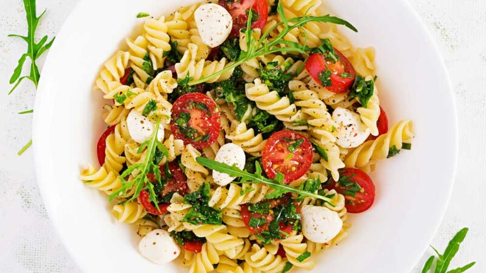

ensalada de pasta

Ingredientes
- 80g pasta seca (yo usé tirabuzón)
- 5 unidades de aceitunas.
- 4 unidades tomates cherrys.
- Un par de hojas de rúcula
- Bocconcini (opcional)
- 1 huevo
- Sal a gusto.
Receta paso a paso
- Colocar en una olla agua a fuego alto. Cuando hierva incorporar la sal y la pasta. Cocinar el tiempo que indica el paquete. Sacarlas al dente. Escurrir y dejar que se enfríe.
- Hervir y cortar el huevo en pedacitos
- Cortar las aceitunas y los tomatitos cherris a tu gusto
- Armar la ensalada de pasta. Mezclar fideos con los tomates cherris, rúcula, aceitunas y si quieren algún otro ingrediente serán bienvenidos.
- Si les gusta, le pueden untar un poco de pesto por encima que queda riquísimo